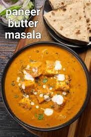
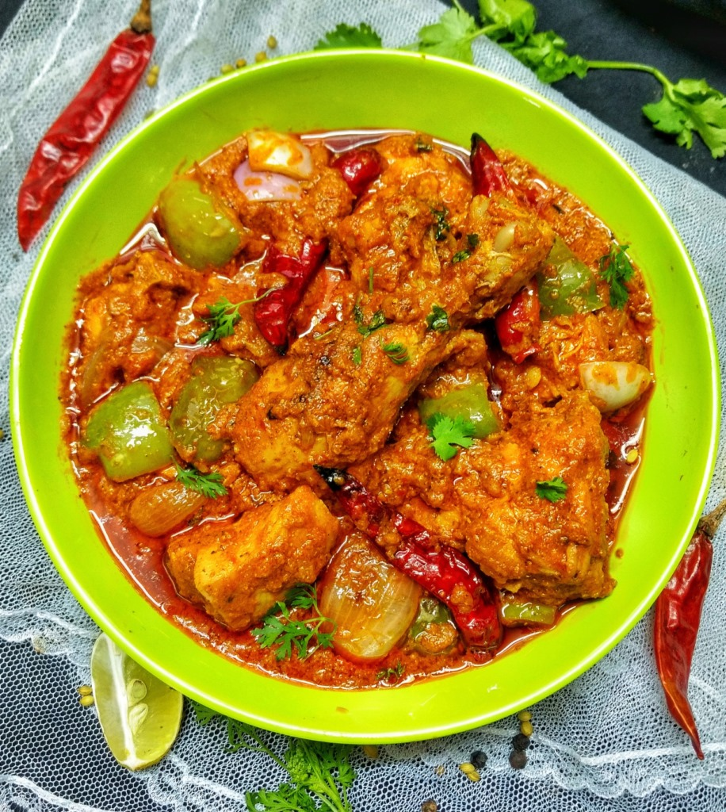

Paneer Butter Masala

Ingredients:
1. 200 grams paneer (Indian cottage cheese), cubed
2. tablespoons butter
3. 1 tablespoon oil
4. 1 onion, finely chopped
5. 2 tomatoes, pureed
6. 1 tablespoon ginger-garlic paste
7. 1 green chili, chopped (optional, for spiciness)
8. 1 teaspoon red chili powder
9. 1 teaspoon coriander powder
10. 1/2 teaspoon turmeric powder
11. 1 teaspoon garam masala
12. 1 teaspoon kasuri methi (dried fenugreek leaves)
13. Salt to taste
14. 2 tablespoons cream
15. Fresh coriander leaves for garnish
Instructions:
1. Heat butter and oil in a pan over medium heat.
2. Add chopped onions and sauté until golden brown.
3. Add ginger-garlic paste and green chili (if using). Sauté for another minute.
4. Add the tomato puree and cook until the oil starts to separate from the masala.
5. Add red chili powder, coriander powder, turmeric powder, garam masala, and salt. Mix well and cook for 2-3 minutes.
6. Add paneer cubes and kasuri methi. Mix gently to coat the paneer with the masala.
7. Pour in cream and mix well. Simmer for 2-3 minutes.
8. Garnish with fresh coriander leaves.
9. Serve hot with naan, roti, or rice.
10. Enjoy your delicious Paneer Butter Masala
Chicken Kadhai

Ingredients:
250 gm chicken boneless
1/2 tablespoon coriander seeds
1/4 teaspoon fenugreek seeds
2 sliced onion
1/2 tablespoon ginger paste
1/2 teaspoon red chilli powder
1 teaspoon salt
1/4 teaspoon garam masala powder
1/2 inch ginger
1/8 cup milk
4 tablespoon refined oil
1/2 tablespoon kasoori methi powder
2 sliced red chilli
10 chopped garlic
4 chopped tomato
1 teaspoon coriander powder
1/8 teaspoon dry mango powder
1/4 cup chopped coriander leaves
1 sliced green chilli
1/2 cup Water
For The Main Dish
1/4 cup tomato puree
1/2 cubed capsicum ( green pepper)
Instructions:
Step 1 Make coriander powder & fry the onion Kadhai Chicken recipe is a perfect amalgamation of
spiced chicken and creamy gravy. Here’s a simple recipe that will help you prepare this dish at home.
Take a non-stick pan and roast the coriander seeds, once the seeds start crackling, remove and crush
them thoroughly and keep it aside. Heat oil in a pan over a low flame, add red chillies and fenugreek seeds.
Stir for a few seconds. Add the onions and increase the flame to medium. Cook till onions turn light brown.
Add garlic and stir.
Step 2 Add ginger paste and chicken pieces Now add ginger paste, coriander seeds, red chilli powder
and coriander powder. Add chicken pieces and cook for 3-4 minutes on high flame. Stir to blend all
the masala with the chicken. Now add the chopped tomatoes and cook for 3 minutes. Add salt,
dry mango powder and garam masala powder.
Step 3 Cook until the chicken is tender Cover the pan with a lid and cook for 10 minutes till chicken is tender.
Stir from time to time and add the tomato puree. Then add the coriander leaves and cook for a minute. Now add the
capsicum, tomato, ginger slices and green chillies. Mix well and reduce the flame. Add milk and mix. Add water to
make it semi-dry and cook for a minute. Remove from heat and serve hot with rice or rotis